殺生石/栃木県那須町
那須温泉の奥に殺生石という溶岩地帯がある。
隣には那須温泉神社があり、温泉でのぼせた頭を冷やすのにもってこいの散歩コース。
私も那須に行った際、必ずと言っていい程、この前は通過するのだが何故か今まで寄った事がなかった。
あまりにも有名で、しかもどんなところか想像が付きそうな観光スポットだったので何十回となくスルーしていたのを今となっては後悔しまくり。
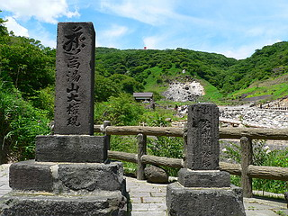 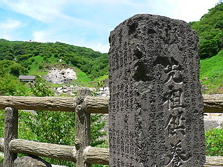
インド、中国で散々悪行を働いた九尾の狐が来日してクーデターを画策するも陰陽師に見破られ那須に逃げ、この地で討ち取られ、その後巨石に化けて毒気を噴出し、人々を苦しめた後、名僧に打ち砕かれる、という何をしたかったのかよく分からない化け物の伝説の地である。
…などというハナシはさておき、本題に入ります。
下が殺生石の前景である。
奥の山の中腹の緑が剥げた部分が九尾の狐が化けて、おまけに砕かれちゃった殺生石である。
駐車場に車を停め、この光景を目にした0.5秒後に次の目的地に向かって踵を返そうか、と思った瞬間、左手の小さな小屋の手前にある赤いモノが目に入った。
最初は花畑かと思ったのだが…
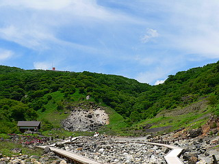 28ｍｍ
…ん？
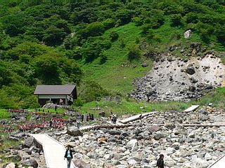 35ｍｍ
…んんっ？
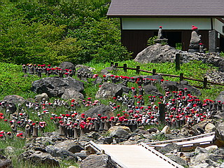 55ｍｍ
…えっ？
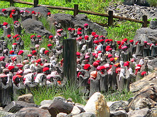135ｍｍ
…あっ！
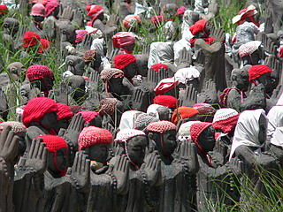300ｍｍ
あああああ〜〜〜〜！！！！！
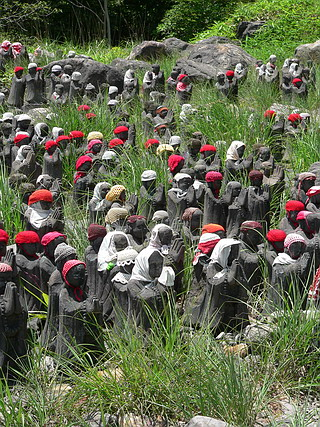
…なんと花畑などではなく赤い帽子を被ったお地蔵さんだったのだ！
新緑をバックに彼岸花の如き真紅の帽子。さすが補色同士、目がチカチカしてきます。
ミッチリ群れ群れのお地蔵さん、案内板を見ると千体地蔵とある。
まあ、殺生石＝草木も生えぬ溶岩地帯＝岩がゴロゴロ＝賽の河原＝地蔵菩薩、てな図式なんだと思うのだが、それにしても昔の狐伝説を求めてわざわざココにやって来た方にとっては雰囲気ぶち壊し以外の何者でもないアイテム。
そんな中、一人小躍りしながら近づく男あり。…それは私です。
いいですよお〜。実にイイじゃないか。この密生具合。
しかもお地蔵さん達、みな手が異様に大きい。
まるで野球のグラブをはめてるみたいに大きいぞ。
合掌時の着合面積が大きい程、拝みパワーが大きいというフェルマーの最終定理に従って手が大きく作られたと思われる（もちろん大嘘）。
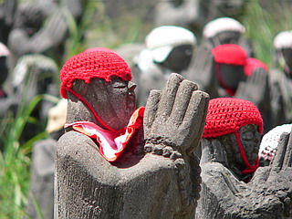 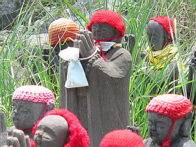
お地蔵さんのほとんどは赤い毛糸で編まれた帽子を被っているのだが、少し離れたところにはオレンジ色の帽子を被ったお地蔵さんチームも。
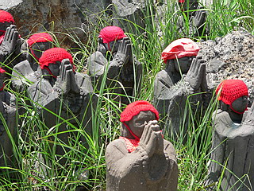 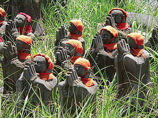
更に赤チームに混ざって白い手ぬぐいを被ったお地蔵さんも。
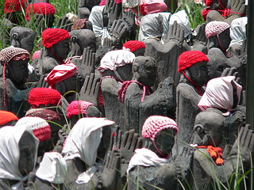 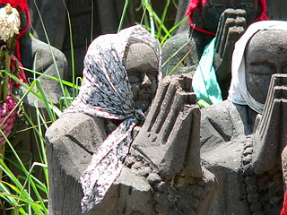
お地蔵さんが白い手ぬぐいを被ると途端に青森っぽくなるところがスゴイ。
オレンジチームは少し離れたところから中央の赤チームの様子を伺っている。
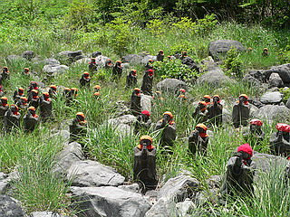
陽光高い時間なれど、ここだけが恐ろしく寒い…気がする。
当然の事だが正面に立つと全部のお地蔵さんが私に向かって合掌〜。
おっ…俺を拝まないでくれたまえ！！
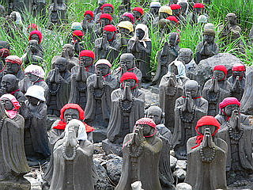
見る者への真っ直ぐな空間的ベクトル、そこだけが沈み込んでいくような心理的モーメントに捕らわれ、思わず白昼夢のような不思議な世界に捕らわれてしまう。
教伝地蔵、この地で亡くなった元ヤンキー僧侶。
何でも母親の作った朝食の乗った膳を足蹴にしたからここで変死したとか。
膳どころかちゃぶ台をひっくり返してしまう星一徹は絶対ココに来ない方がいいですね。
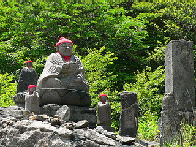
賽の河原らしく石がたくさん積んである。
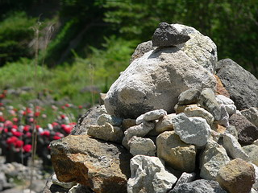
小さい子供が「何コレ、怖〜い！」とか言ってた程度で大抵の人は一瞬ギョッとしながらも神妙な表情で通り過ぎる。
中には手を合わせる人もちらほら。
結構、市民権を得ているようで、チョット意外だった。
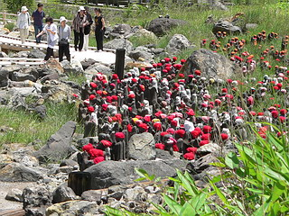
聞くところによるとこの千体地蔵、町内の石工さんが彫っていて、現在も増殖中らしい。
一人でコツコツと千体のお地蔵さんを彫ろう、という決意にはただただ頭が下がる思いである。
2007.6.
珍寺大道場 HOME